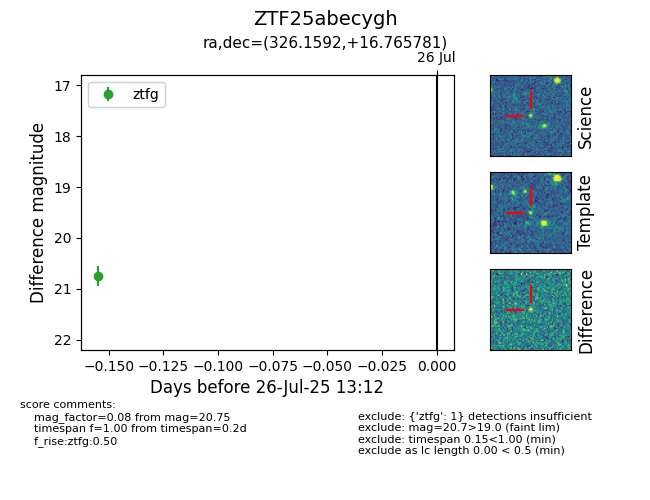

Target ZTF25abecygh at 2025-07-26 13:12, see:
FINK: fink-portal.org/ZTF25abecygh
Lasair: lasair-ztf.lsst.ac.uk/objects/ZTF25abecygh
ALeRCE: alerce.online/object/ZTF25abecygh
alt names
ZTF25abecygh (ztf,fink)
coordinates:
equatorial (ra, dec) = (326.1592,+16.76578)
galactic (l, b) = (71.5256,-26.92918)
photometry
last ztfg=20.75
1 ztfg detections
